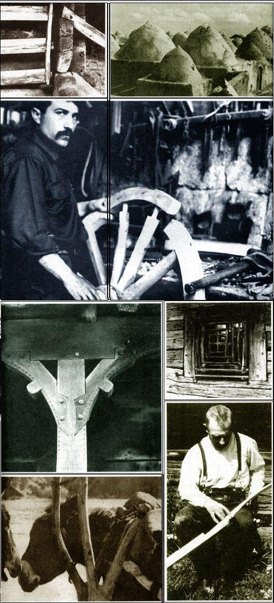

Christopher Williams' Craftsmen of Necessity is about the creation
of useful objects - including shelter - by the native artisans of Europe and the
Near East. It's about Berber stone villages, the wood houses of Rumania,
Syrian blacksmith work, Finnish farm tools, Sicilian plows, Egyptian boats
and a wealth of other handsome, durable contrivances, all made of readily
available matrials by craftsmen who know the secret of working with, not
against, nature. If you're a lover of good design, this book is for you, and
we've reproduced just a few of Charlotte Williams' photos to show you why.
Craftsmen of Necessity is published by Random House.
From Craftsmen of Necessity by Christopher Williams. Copyright © 1968, 1973, 1974 by Christopher Williams. Reprinted by permission of Random House, Inc.
|
 CHARLOTTE WILLIAMS From Craftsmen of Necessity by Christopher Williams. Copyright © 1968, 1973, 1974 by Christopher Williams. Reprinted by permission of Random House, Inc. |
|
|